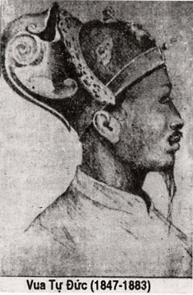

Tiêu hà tá tán khởi ư phong
Sấn nhập trùng vi nhiễu trướng trung.
Bất luận huân tiêu phàn khoái lực
Hốt văn Hàn Tín tự tiêu không
Các quan ai nấy đều hiểu như sau:
Tiêu Hà giúp nhà Hán ở đất Phong Bái, không dùng tới sức mạnh của Phàn Khoái, chỉ cầu ở tài Hàn Tín là nên việc.
Ai ngờ trong bài thơ trên, Tự Đức dụng ý: tả con muỗi. Tiêu Hà có nghĩa là tàu chuối, lá sen; phong là gió; hán là nó; hàn tín là tin lạnh, phàn khoái là hun đốt.
Ông Lăng Nhân Phùng Tất Đắc dịch bài thơ trên ra chữ Nôm như sau:
Bẹ chuối, dài sen nối cánh rung.
Bay vào màn trướng quấy lung tung
Chẳng cần phải tốn công hun đốt
Tin lạnh vừa đưa tẩu tán cùng
( Theo Hoàng Trọng Thược )
